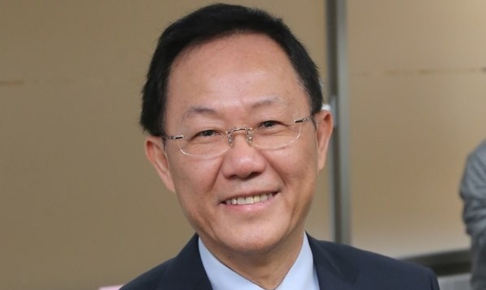

我在前文《政府的第一要务》里曾提过，无视现实的经济规律，一味譁眾取宠，追求政治迷信、社会理念、族群优势的后果，必然是让穷人更穷，弱势者更苦。其实这在经济学里是一个很基本的概念，英文叫做Social Cost，中文是社会成本，也就是少数人为了追求自己的利益、迷思和方便，会损害整体社会，造成不易测量的成本；例如乌贼车主为了节省几千块的维修费，把烟尘散布到社区的空气中，引起居民的健康问题，造成几百倍或几千倍的医疗费用损失和痛苦。如果社会没有健全的公权力机制，光凭良心是没有办法扼制这种趋势的；只有强大有为的政府才能阻止自私愚民侵害弱势群体的行为。而普选制度很大的一个问题，就在于它不但不能產生强大有为、独立于强势群体的政府，反而鼓励政客们为自己当选后的名利而迎合民眾的错误迷思，所以天生就是越自私、越愚蠢、越不适任的人越选得上，使政府本身就成为制造社会成本的自私犯，更别提为社会公利服务了。
丁守中，很明显地是最近的台北市长候选人中最适任的人选，却连初选都过不了，以致整个选举成了小蛀虫竞赛（A Choice of the Lesser of Two Weevils）。
换句话说，人民百姓的主要活动项目是赚銭养家，大眾媒体则以迎合读者的快感为首务，因此指望人民或媒体有足够的政治和经济上的专业知识来决定对整体社会最有利的政策方向，无异于缘木求鱼。政府应该由专业的人员提供专业的服务，而不是由媒体一个口令一个动作（很可惜，这么简单的道理连总统都不知道）。我们生了病，并没有办选举来决定谁来到医院执刀；一个总统或市长所能影响的社会成本远高于一个医生所能决定的几条人命，选出一个既没有专业知识也没有专业态度的人，那不是大规模的草菅人命吗？
去年九月至十二月间，香港发生了示威活动，要求普选。虽然示威者的资金主要来自当地富豪和美国的半官方基金会，不是台湾政府，他们的战术却是从台湾取经回去的。台湾不但出力教导，而且在示威期间朝野一致高调声援。这不但是对民主普选制的无知迷信，而且在现实政略上的短视愚蠢，也已经到了无以復加的地步。到现在已经将近半年了，台湾人仍然普遍自我感觉良好，浑然不知一个歷史性的转折点已经擦身而过，台湾未来的命运已有极重大的改变。所谓不作死就不会死，像台湾人这様作死了自己却还兴高彩烈的，我虽然对中外歷史都很熟，却也想不出一个先例。
中共不论功过如何，始终是一个有高度学习性的组织，不但对自己的错误能深刻反省，对他人的经験也能设身处地，充分吸收利用。我在以前的几篇文章曾提过，1990-91年的海湾战争中，装备和战略与共军相似的伊拉克被美军轻易撃溃后，中共陆军随即发愤图强。1995-1996年的台海危机曝露了中共海空军的不足，19年下来局面就已完全改观。1999年，CIA拿中共大使馆当靶场，15年后中共已经有了真正的核反撃能力。2014年的香港示威事件，对中共也是一个极大的教训，请耐心听我解释。
此前中共虽然坚持不放弃武力统一台湾的选项，实际上是准备以经济利益来促成统一的，所以一而再、再而三地让利，在统一的时程上，更是定到两代之后的2049年（亦即中华人民共和国成立的一百周年）；届时中国大陆的人均GDP应该至少与台湾齐平，和平统一的经济阻力应该是完全不存在的。而和平之路对海峡两岸来说，都是最理想的。
中共的军力，已经能够轻易地撃败国军；就是美国肯全力援助，顶多对共军严重杀伤，阻止占领是不可能；在其同时，美军一様也会损失惨重。而最近的歷史告诉我们，连只有三个师能机动部署的俄军都足以吓阻美国对乌克兰的军事干预，共军在质方面至少与俄军相当，在数量上则超过其五倍，依美国的自私习性，是不可能真的用兵的。此外国军将领早已彻底腐化，一心以捞銭为要务，这些准备出国当寓公的人，会在战时固守殉国，只能是个笑话。所以这个台海战争，台湾是打不起的。
从中共的观点，收復台湾虽然是歷代传下来的核心任务，但是在优先顺序上却还比不上发展经济和提升国力。如果现在冒然武统，就给予虎视眈眈的美国一个天赐的良机，不但其后必然会有全球性的贸易制裁，而且美国所谓的重返亜太也将获得巨大的动力，中共将因此而面对至少在东、南两方面的战略包围，和平崛起的目标将会遭遇极大的困难。
在这様的背景下，台湾人原本不须费一指之力就可以确保和平安全的未来；但是愚蠢是无限的，台湾人居然会去支持香港示威，从而主动改变了海峡两岸统一时程的考量。我并不是指支持香港示威会惹中共不悦；台湾这些年来早已把侮辱冒犯中共当作一项全民运动，根本不差再多一次。香港示威事件真正的影响在于它提醒了中共领导人：光是统一还不够，统一之后仍然会有内在外在的推手来让新收復的地区动荡不安。香港原本是文统的様版，是对台湾的示范，台湾人不接受也罢，却去帮忙把这个文统的过程搞砸，那么岂不是在强调非武统不可？武统和文统的差别，就在于它可以接着戒严，反正战斗期间已经死了人，再多枪毙几个也没人搞得清楚。台湾这些年来社会上爱闹的人名利双收，所以到底谁是有瘾、有病、有鬼的问题份子，都已经完全公开，也没有搞错对象的疑虑。以台湾人欺善怕恶、轻家国而重乡土、勇于私斗怯于公战的习性，占领军若说不是来统一而是来殖民的，台湾人反倒会感恩戴德，几代之后还怀念不忘（日本人当年是以挑动平地人和山地人的斗争来安抚台湾；共军若是把台湾割成南北两半来分治，只怕台湾人也会互斗不疲）。
但是只要美国在旁待机而动，中共就不能对台用兵，所以台湾还有大约10-15年的时间。到了2025-2030年间，中共的经济总量将超过美国与欧盟之和（假设年增率为7%，则在2025年，以PPP计算的中共GDP就将超过美欧之和；中共自己保守假设年增率会逐步下降到4%，那么要到2030年才会实现），实体工业產值到达美国的三倍（中共的实体工业產值在2012年即已达到美国的1.6倍）。这时台海若发生战争，就算欧洲不高兴，也顶多只能像2003年美国入侵伊拉克时一様，象徵性地抗议一下，不会有能力加入对中共的制裁，那么美国自然也无力独力搞制裁。共军现在已经有对台的压倒性优势，到2025-2030年，根本就不必费吹灰之力；国军贪腐严重、士气低落，到时只要有两三个旅长愿意为台湾的政客卖命、拒絶马上投降就算好的了。共军要清除这两三个旅，顶多就是两天时间，再加上两天来行军到位（2003年的伊拉克战争中，美军便是行军多、战斗少），总共四天就足够占领整个台湾。预计国军死伤1000-2000人，平民死伤数百，主要发生在台北的巷战过程中。
我并不是说这个严峻的未来已经完全确定了，事实上未来永远是不能精确预言的。只是台海战争在未来15年原本只有不到1%的机率，在香港事件之后跳升到接近50%（我并不是指习近平有50%机率已经下定决心武统，而是10-15年后下一任中共领导人有50%的机率决定武统）；这应该是震动台湾的大事，可是台湾政坛上下却依旧迷茫，各自忙着争名逐利。如果台湾百姓还在乎台海战争会带来的死伤和损失，就应该好好想想如何减低武统对中共当局的利害诱惑，以确保自己长期的和平安全。不过我在前面已经讲过，台湾的普选制度天生就是越自私、越愚蠢、越不适任的人越选得上，所以我对此是甚为悲观的。
【后注】有读者迴响认为这篇文章是揣测之词，这是当然的，因为我讨论的是10-15年的未来。不过对于所谓“攻心为上”的说法我不同意。战争素来是治权转移、版图变更的最明确理由，对内对外都是如此。和平转变即使是多数决，也没有决定性（Finality），反对者仍然不会服气，乌克兰（去年被罢黜的总统是多数选出来的）和香港（民调显示多数人不支持占中）就是最近的例子，因为他们总可以要求再重新决定一次。反之，凡是以军事征服的（如北越征服南越，或是斯里兰卡消灭Tamil Tiger），事后的麻烦极少（而且是越血腥的征服麻烦越少），即使有，也必须是长期的武装游击战，而台湾没有游击战的本銭（这恰是1950年代初，台共失败后，中共自己内部反省所做的结论，因为台湾没有足够的真正人迹罕至的荒山野岭）。
总之我在谈的，不是我希望如何如何，而是以一个战略家的角度来看可能会如何如何（亦即当10-15年后的中共政权了解到武统没有严重的外交后果后，根据台湾的社会结构来决定是否有其必要；习近平显然还没有这个选项）。台湾急着拒统，却忘了真正可怕的是武统，结果像个没有自制力的小孩子一様，把自已心里的欲望拿出来撒泼，完全不顾对手的可能反应；现实里中共极强而台湾极弱，所以不论个人政治倾向，仍然不能把文统的路封死了（不一定要走，但是不能封死），这是成熟懂事的人必须了解的。
75 条留言
一直很欣赏博主的文章，受教良多，这里先致以谢意。不过这一篇感觉推测过多而证据不足。中共是否因为香港事件而对台湾政策改变，目前还没有明显的迹象来证明，至少国臺办的调子还是一样不着边际。的确，近年来大陆对武统必要性的认识在增加，不过我个人以为文统无法解决的问题恐怕武统更难解决，一个戒严又能如何呢？所谓攻城为下攻心为上，台湾人心至此，直接处理难有良策。按下围棋的思路，不好处理的局部就不去处理。也许等台湾人闹累了，厌倦了，觉醒了，终会有浪荡儿回家的一天。
中国崛起可能不免需要一场立威之战，但个人希望不要是台湾，哪怕日本都行。
没错，这事还远在十几年外，不能断言。但是国臺办的调子本来就不可能变：不但武统的决定还在十几年后，即使已经决定了，国臺办也必须装作没事。
总之台湾对大陆的政略第一重点絶对不应该是拒统，而应该是拒武统；然而台湾社会上下左右却完全没有这点认知。
我三老爷最早是傅作义的部队（我母亲家是老北京），后去的朝鲜，被俘后选择的是去台湾。
去年8月份三老爷一家（屏东人）到北京玩，那时香港就已经开始折腾。我就对两个舅舅说“再这样下去一定会影响到台湾的和平统一”，他们还不认可，尤其是我舅妈，认为美国还是超强，呵呵！
在网上同台湾的朋友交流时我就说让他们好好学习下老共两个一百年奋斗目标！真到建国一百年时台湾问题还解决不了，恐怕老共也没颜面继续干了吧！我感觉不出意外的话2025-30年老共就会主动介入统一的问题，2035年前后最次也要有个统一的时间表，到时台湾同不同意已不重要了，不行一定会霸王硬上弓，各种手段一起上！
如果之前美国提前引爆台海问题，如16年民进党上台后越线，我感觉老共还会采用印度，越南模式——快速突入，打掉有生力量，撤兵！接下来就是外交战，经济战，封锁战！台湾不是喜欢选举吗？弄得你什么时候受不了，选出愿意统一的领导人再和你谈！否则台湾现在真有可能是个泥潭，拖累中华民族的复兴！俺就曾经开玩笑说“不怕闹独立，就怕现今说：好吧，明天就统一！”哈哈！
从法理上讲国际社会都认同一个中国，除了美国，日本会主动介入，其他国家最多拉拉偏架。问题是时间节奏是掌握在大陆手里，什么时候开打自己说了算！美国怎么布防？总不能驻军吧！耗也耗死他了！另外，这是一场关乎国运之战，美国应该不会傻到选择在大陆周边上摊牌吧。而且在现今又不能主动攻击民用设施，两国都有大杀器，大陆即使遇挫，直接损失并不会太大，只要稳住国内局势就会再战，一次，两次。。。直到打下来为止！
中国人历朝历代都有卧薪尝胆的例子，不行大不了就继续装孙子呗。可历史上同中国做对的蛮夷没有一个有好下场的！
老共还是有高人的，老美不是愿意收保护费嘛？行！没问题，要多少？就像一个勤劳的长工样，任劳任怨，有点钱就去买美债，飞机。地主不高兴了还时不常骂两句，踹两脚。哎！这也就是集权体系了，民选的早翻天了！可现在看为中华民族的复兴赢得了宝贵时间。地主早感觉这个长工不对劲——自己辛辛苦苦挣两钱不但要孝敬自己，还时不常请小兄弟喝酒，连自己家的小姐对他抛绣球都不接！一直想开革了他，可哪找这么好的长工呢？故一直犹豫不定，加上他邻居家的大毛也不是什么善茬，那就先放一放他吧！谁知几十年的功夫，他成了这么个庞然大物！
台湾的命运从来没掌握在自己手里，真心希望能为中华民族的复兴作出应有的贡献！
估计应该是节前最后一次写博了吧，再次祝您新春快乐，全家幸福！
PS：俺是大年初一生的，今年赶上的是大年29！
我写这篇文章，部分是因为在过去几年中，大陆网友对统一的意见大幅向武统倾斜，这是台湾这几年胡闹的必然结果，而台湾人，即使是有见识而无偏见的，却对此浑然不觉。这样明显的战略危险，总要有人出来说说事吧。
just me2015-02-15 00:00:00
Taiwan will most likely not an issue after all. How can CCP survive another 20 years? Corruption (C), censorship (C) and pollution (P) will likely bring down CCP! I was very enthusiastic. I really wanted to see the rise of Chinese (my people). I was eager to help. In the end of the day, the US of A will most likely prevail. The Mainland China under CCP is not sustainable. How can it be? If CCP’s China is so strong, why do they need to build a great wall to block the access to foreign internet? Besides, most importantly, it is the quality of the people. Chinese can be very selfish and untrustworthy. I love those beautiful stories of human sacrifices for the common good. Unfortunately, most Chinese are the opposite. It is just so ironic!
In fact, it is much easier to focus on the military buildup. But ultimately, the construction of a civil and lawful society will matter the most. Sadly, they haven’t even started it yet!
We Chinese from Taiwan should really stand up and proudly take the responsibility and opportunity. KMT, this is a once-in-a-life-time opportunity. Let DPP race to the bottom. That’s where they belong anyway. The clown show will end sooner or later.
家有诗书如沧海, 浩然正气满乾坤
Theories of Chinese collapses have been promulgated more than 10,000 times in the past 30 years. None has come true, so at least empirically, your chance of being correct is 0/10000=zero.
The Great Internet Wall is a response to US propaganda machine. Read my previous articles about it.
Individual merits have nothing to do with a nation's rise; only the collective strength of the organization matters. Have you any ideas what the German people were like before the unification of 1870's? They were lazy drunks! Even today, the worst tourists are not the Chinese but the Americans; The Chinese are only the second worst. Wealth changes cultures; not the other way around. Same with civility and law. You simply got it backward.
KMT cannot even impose the most basic internal discipline. In my book, that is called a losing organization.
习初上任.即说..两岸问题不能一代一代留下来.习到目前还没说过虚话..个人认为习不会可载之史册的功劳.留给下一任(偶指的是解决两岸问题..不一定是实质统..就像邓解决香港问题)
他再怎么急，外在环境不容许，还是得留给下一任；不过他可以好好建军，做好准备。
twinkleus2015-02-15 00:00:00
我非常同意你对这次香港事件的判断。我认为中国政府一定会有下一步的动作，其中一个就是“加强国家认同感”，先从教育入手，其它的大动作要等到2017年选举以后才会推出，以免节外生枝。我同时还认为：其实，从马英九执政后，台湾所发生的一系列事件后，中国政府已经对“文统”丧失了信心，目前大力加强两栖登陆的能力就是个明证，而日本和美国不断地进行大规模的两栖登陆演习，也是力图恐吓或阻止中国的行动（双方都利用钓鱼岛争议作掩护）。
日军就只是第七舰队的反潜分队，再怎么演习也没什么吓阻力。
所有共军的装备中，最针对台海的就是野牛级气垫船；它的航程太短，基本上只能用在台海。我以前已经估计过，共军需要20艘来打一个全规模的台海战争，而现在只买了四艘。我们只要看看在未来10年是不是增建到20艘就知道武统的准备是否认真。
对楼上的留言，最新的消息说，共军已经和俄罗斯达成协议，新的野牛从俄罗斯购买。参见新闻：“俄将取代乌为中国造野牛气垫船：数量将远超4艘”
是否意味着 “武统的准备是认真”的？
和俄国人当然在谈，不过不会急，因为还有十年以上才用得上。此外共军喜欢先试用几艘再决定是否批量建造。所以我预期谈判会谈上好几年，批量生产大概是2020年后的事。反正以中国的造船业规模，20艘也就是两年；不过要真是认真准备武统，30艘40艘都有可能。
twinkleus2015-02-15 00:00:00
什么时候动手不太好说。但是可以肯定，十年之内发生一定是被动的，由小概率事件引发的，就像克里米亚事件。十年以后是主动的，借口是可以创造的。
以台湾政界之愚蠢无知，还须要创造借口吗？
warmwinter2015-02-16 00:00:00
我觉得这是很正常的表现啊。面对一个不愿意接受也无力改变的局面，做出各种各样能自我发泄的回应和反抗。这就是一般庸人的表现。只能说台湾政客们至少战略上比较平庸，没有给社会注入一种自强不息的精神。看看立法院打架这种狗血剧情和台媒的风格，实在不像是能做大事的。真正有决心有能力的政治家应该发掘和发展共识，弥合社会割裂，带领台湾走向东方瑞士的方向。。
所有欧美的英雄政治家都出现在全民普选（约1920年代）之前，唯一的例外是小罗斯福，但是他不但出现在有电视之前，而且靠大萧条成为美国史上最霸道的总统。在有电子传媒的现代全民普选制度下，别说能人一般选不上（坐轮椅的小罗斯福连想都不用想），就是偶然选上了，也没有一展长材的空间，例如前德国总理Schroeder，只不过做了一点基本的改革，马上就被踢下台。可笑的是那点改革和中共比起来微不足道，却已足够推进德国的经济，使它成为欧洲霸主。
对台湾人而言，怎么看当然还是台湾最好。对于可能发生的战争一来时间还早，二来如您所说的台湾的战力已不成比例，能够影响的程度理应不大。但我想对于台湾的下一代而言，最严重的问题还是台湾自己本身的内斗以及被各產业的竞争力大幅下滑。自2008年进入国际物流產业至今，深深有感于台湾外贸能力的倒退。再此危急存亡之际，台湾讨论最多的不是如何增进產业以及企业竞争力，而是废核四、反服贸、争独立。"国之将亡必有妖孽"说的真好啊....
是啊。台独的罪过不在于分裂祖国什么的，因为统独这事由中美说了算，台湾人根本没有决定权。台独的罪过在于把台湾的经济发展踩在脚底牺牲掉了；李登辉是政治斗争的超级高手，却是经济上的白痴，在这点上和毛泽东很相似，搞出的结果和文革也只是程度上的差别。
凡事有其两面性，拒绝和平统一，祇能面对武统。或许这就是台湾的宿命，当年满清王朝对台湾不也先招安？
民主普选之后，反而没法因应现实，必须归罪于宿命，这点值得深思。
是啊，1919年凯因斯就预言因为英法政府的短视会打二战，到了1927年，也有很多英国人和法国人和你一模一样，讥笑凯因斯：“真是好笑，八年前就有人危言耸听，时至今日还不算相安无事”，不过现在大家只记得凯因斯了。
蠢蛋在每个时代都有很多，往往在他们自己的社区还能形成绝对多数，但是歷史对他们如果不是完全遗忘，也不会是仁慈的。
YST网友里面其实列举了很多事例，证明大陆已经做好准备，结果喊着法理台独的陈水扁临阵退缩，搞成一场闹剧，让大陆看出了所谓台独的真面目。大陆网友嘲笑蒋公当年日记强国，地图开疆，不知道是不是把这个毛病带去了台湾，现在网络上常出现在护照贴纸表示台湾国，真是让人既好笑又无奈。台湾曾经想要做东方瑞士，不知道是否真的知道，瑞士雇佣兵享誉世界，让欧洲诸国不敢轻易碰之。
今天刚刚读到韩非子的《韩非子·亡徵第十五》，其中有三句，真的很适合台湾现在的情况。
国小而不处卑，力少而不畏强，无礼而侮大邻，贪愎而拙交者， 可亡也。
恃交援而简近邻，怙强大之救而侮所迫之国者，可 亡也。
羁旅侨士，重帑在外，上间谋计，下与民事者，可亡也。
PS：古人之智慧，令人击节赞赏。
唉，如果他们只是在家里做个安静的蠢蛋，我还懒得管他们。问题在于他们把自己的愚蠢强加在国家社会上，每年害死几千条弱势群体的人命，那么就没有理由对他们客气。
韩非子这篇文章我好久没看了，其实全篇的那些“可亡也”几乎都适用于台湾，真是可悲。
chenwj2015-09-20 00:00:00
看到 "无名网友" 这种言论，我很感慨。民眾和媒体这样闹，政府也随着民意走 (尤其是陆委会和国防部)，我看着很头大。岔个私人的问题，我弟弟正在国防部当兵，如果到时候真出了事，国防部应该会是第一波打击目标，我该给我弟什么建议呢?
那些人对缺电的问题也是同样的论调：危言耸听，但是他们的无知并不代表台积电不会被逼出走。
如果我是共军，第一波打击就会有5发左右重型（>500kg）弹头落到国防部，届时大家只能看运气了。还好十年内战事不太可能发生。
Shiftbear2015-10-19 00:00:00
讚！
欢迎你与大家交换意见。
//而习的弹性和务实在此也尽显无遗; 中共对台从来没有这么柔软模糊过; 这说明他现在不想在台湾这方面有事,//
符合我之前的判断, 马英九这七八年的 不统/不独/不武, 其实最符合大陆最高层的战略胃口,。至于以后摊牌的时机, 大陆会继续"以我为主"－－我猜是起码要等到一路一带上了轨道，台湾的忽悠作用也用完了，再作考虑文统或武统的问题。
我以前已讨论过，逼统必须有武统做后盾，而武统必须等到欧洲已经跳出美国口袋才有可信度。这要求一带一路不衹是上了轨道，还得要有了大成。
马习会结束, 球扔给蔡英文了. 而事情前后她荒腔走板的回应固然是选举语言, 但也由此看得出她这个空心菜的称号不是白给的. 她其实可以不必讲得这么极端也一样赢得大选, 同时也可留住一扇与中共在今后协商的大门. 因为换柱对国民党的伤害很大, 所以马习会她只要出以中性的回应, 一样可以争取到中间选民的票. 结果她不为此图反而情急之下狐狸尾巴露出, 尽现台独意识. 马英九一定乐坏了; 跛鸭最后的反击成功. (虽然总统大选还是会输, 但立委这方面可能会有加分).
而习的弹性和务实在此也尽显无遗; 中共对台从来没有这么柔软模糊过; 这说明他现在不想在台湾这方面有事, 施予笼络是要应付其他更优先的方面. 之后就要看台湾是否识相了(这点我想习是不抱希望的) 所以一切走着瞧; 四五年之内如果大致顺利; 中共能突破老美的围堵, 实力更上一层楼, 而台湾这边如果还是同样的无知短视, 我恐怕以习的性格, 在他下台前就会逼台湾摊牌解决这个问题. 马习会是他对台的布阵; 看似仁至义尽, 唯其如此, 其后就是冷冽冰霜.
我的看法; 台湾的无知短视在蔡上台后会保持不变; 一则因为政治生态, 二则蔡的智慧能力有限, 三则老美的糊弄. 而台湾以其地位, 其实是可以参与下棋而不必为棋子的, 无如一群蠢蛋在唱戏, 为之奈何?
分析得不错，不过习在下臺前就会台湾摊牌的判断太过武断，除了个人的功绩没有任何理由如此急躁。武统的代价很大，习应该不会这般自私。
我们一直都依陈水扁前例，认为蔡英文即使要推独，大动作也会在第二任期，但是请问有没有这种可能，蔡知道第二任期两岸差距将继续拉大，所以在第一任期就铤而走险？或者在任意一个时间点上，太阳花式的脑残臺独爆发，蔡按不住，不得不被逼急独？
蔡英文自己没有推独的理由，唯一可能爆发臺独衹能是玩弄民粹过了头，骑虎难下；这是我们以前已经讨论过的结论。
K的问题, 我个人的看法是完全不可能. 台湾上下就是个安于小确幸的心态, 而台湾政治人物的器宇太小了. 最重要的是美国人对于这一点也有深刻认识; 即这些人成事不足败事有余, 所以只希望他们能尽量维持现状就好. 而台湾的所谓第三势力; 像台联党还有最近兴起的进步力量等显性台独份子在台湾也只是一小撮人. 美国人允许或鼓动他们出来闹事, 也只是为了造成一种牵制的作用, 怕两岸走得太近而已. 民进党则是负责联繫并利用他们做为选战的侧翼或敢死队. 事实上是; 如真要有K想像的那种情形出现, 那中共还求之不得呢; 一了百了又不会有太多的副作用,不是吗? 而我的看法是大部分的台湾人还没有脑残到那种地步, 因为他们现下日子还过得还可以, 不可能因为一时衝动就不顾身家性命.
K 的担忧只有一点是成立的; 即近年来偏独的人有成长的趋势. 因为马这七年任内两岸来往密切, 造成很多台湾人的不满. 譬如台湾最大的旅行社雄狮被大陆人买走了, 就有人说陆客来台, 但钱还是被大陆人赚走了, 这根本就不是让利. (这点我跟我在台的朋友解释过, 陆客来台除了旅行社, 最大的还是惠及各地的旅游饮食业者). 又有说是大陆台商在大陆赚了钱不思回馈家乡, 只将赚的钱回流台湾置產. 像大直一带那种新生地房价高的惊人, 但空置率高达一半, 这只是炒高台湾的房价却让台湾年轻一代望楼兴嘆, 此辈台奸也! (这一点我也解释为台湾投资环境差, 缺电缺水缺工又土地取得困难, 那你要台商怎么办?)
马政府虽然无能, 但我觉得大陆对台工作还是做得不够细以致被一起拖下水. 不管他合不合理, 但你不够了解台湾人对大陆反感的枝枝节节, 结果是搞不清状况白做功夫. 中共一向标榜落实政策, 但在台湾这方面以我个人的了解, 那还差得很远. 让利还被骂, 那怎么也该检讨检讨了.
我们还是不要太低估臺独人士脑残的程度。
大陆的让利的确是做得很粗糙，但是标准不在于臺湾民意，而在于该用到刀口上，亦即真正需要救助的人群。吃饱喝足、意识形态挂帅的人，钱给得再多，他们也衹会笑你傻。
chenwj2015-11-08 00:00:00
给 "渔翁" 网友。大陆让利，如果台湾方面有任何问题，都可以向大陆方面提出。我相信大陆都很乐意解决。毕竟，最清楚台湾情况的，应该是台湾政府，而不应该是大陆。如果事事都要大陆操心，那还要台湾政府做什么? 就好比我给一家人赚钱的机会 ，但他们自己内部对怎么分赚来的钱摆不平，最后又怪到我身上，这说得过去吗? 台湾政府本来就应当自己把大陆的让利，转化成民眾对大陆的好感。结果是什么? 台湾政府痴迷于所谓的 "自由"，放任媒体造谣抹黑，搞成今天这一副德性。难道大陆政府需要亲自过来辟谣吗? 需要亲自过来剷除掉这些造谣的媒体吗? 如果以上答案皆为是，那台湾政府可以废掉了。上面的话糙了一点，请见谅。
原本就不该理会臺湾政府。直接济助贫民，既有实惠，又不怕人説事。
//譬如台湾最大的旅行社雄狮被大陆人买走了, 就有人说陆客来台, 但钱还是被大陆人赚走了, 这根本就不是让利//
简直莫名其妙，先不说陆客的饮食住宿消费。就光拿旅行社的所有权被大陆人收购来说，但它还是向台湾政府缴税的，这部分税金将变成政府的公用设施投资或者社会福利支出的一部分（打个比方：新修一条公路或捷运啊，百姓的健保啊等等），旅行社还得雇人，又增加了社会就业。对台湾来说这都是隐形的受益啊，怎么能说钱全被大陆人赚走、而台湾一点好处也没得到呢？赚钱的也只是收购者而已，而他赚的是合法的经营利润，旅游业若不景气，他也一样要赔钱或倒闭。归根结底还是陆客来台这个利好因素，导致大陆投资人看好台湾旅游市场前景，否则旅行社也没人愿意收购。假如没有陆客来台，那么旅游业不景气，旅行社肯定要倒闭一部分，则政府的税收肯定要损失掉一块，很多从业人员也要失业。
有时候觉得台湾人莫名其妙，但是又和我的实际经验有很大偏差，因为我有亲戚在台湾，每年都要去台探亲看望长辈，从南到北我也逛了个遍，我接触到的台湾人其实大部分都是很善良的，素质至少比粗鲁野蛮又爱装的香港人强太多。绿色的南部民众我也接触过，我在南部住民宿，开店的老头老太太十分和善，每天嘘寒问暖，就是看见我买中国时报后紧张兮兮地告诉我，这些蓝营媒体都是骗人的，千万不能看，简直让人哭笑不得。我在想，这些善良的普通人和我在媒体上见到“张牙舞爪、丑态百出”的绿营民众真的是同一群人吗？政客到底有多无耻，把一群正常的老百姓忽悠成了疯子？
是同一群人。平常很和气、善良，搞起运动来就集体疯狂了。当年文革有几亿人斗臭了几千万人、逼死了几百万人，难道几亿人都是天生邪恶的吗？
引用：//有时候觉得台湾人莫名其妙，但是又和我的实际经验有很大偏差…我接触到的台湾人其 实大部分都是很善良的…绿色的南部民众我也接触过，我在南部住民宿，开店的老头老太太十分和善…我在想，这些善良的普通人和我在媒体上见到“张牙舞 爪、丑态百出”的绿营民众真的是同一群人吗？//
回应之乎者也网友：我以自己在台湾生活的经验来说说我的看法，我所说的不见得完全没错，但应该可以当成解释臺湾社会何以如此的初步。
我认为，虽然臺湾迈入工商社会有几十年了，但臺湾社会运作的核心，其实还是中国传统农业社会的那一套，讲究人情而非立基于事实。因而，人际间的接触，往往就是评价与认知的主要来源。除了农业社会中人情的运作之外，可能也多少仍留有一些垦殖社会的遗迹，这与前述重人情相结合，就变成重视群体间的义气更甚于其他社会价值。所以臺湾过往歷史乃有数不清的械斗。
因为重视人与人间的人情，所以你在台湾看到的和善确实是真的。他们看到你，能与真实的你接触，他们觉得你是个好人，所以会和善对你。
但是，前述重人情、讲义气的运作模式，也能解释你所见到的张牙舞爪，丑态百出是怎么会和和善同时出现在同一个人身上：
一、 农业社会不讲究资讯来源的确实，反而重视资讯来源是否来自自己相信的人。若是自己信得过的人所说，就相信那是真的。
二、 农业社会可能会基于义愤而有某种对不公的控诉，可是那种控诉往往不见得是基于某种抽象正义的坚持，也不一定需是建立在事实之上（只要大家都这样讲就是真实的了）。在现代社会中，这种控诉可能会被加上某种正义的「形式」，但是，不论採取的是什么形式，农业社会之控诉中，真正重要的，不是那个正义的理念，而是某种情绪的发泄。
三、 也因为坚持的不是某种基于理念的正义，而是某些情绪。所以，其实这种控诉是很容易被某种条件给安抚下来的，就像臺湾虽说反核声音很大，但是一旦臺湾电力公司发放还可接受的金钱以安抚核能电厂周边居民，则核电厂一样可以在当地继续存在。只是电厂存在的同时，周边居民一样会继续不满。这种想法，跟现代社会中认知拿了钱就该闭嘴的作风是不同的。
四、 因为是某种情绪的抒发，农业社会的抗争，往往是无限上纲的。包含任何芝麻绿豆大的事都可在抗争中提出，成为不满的原因；而开出的条件也往往无边无际，远非苛刻两字可形容，而简直是根本要别人的命。例如二二八事件后，臺湾社会对国府开出的条件就是一例，其远超出国府能接受的上限。这在现代人看来往往不能理解。但如前所述，那是情绪发泄。当然，也正如前所述，那种所谓的情绪，也不一定需要建立在所谓的「事实」上。
五、 讲义气使得社会不讲真正的正义理念，而重视的是某种群体的一致性。因而，臺湾社会中，弱势的声音（应该说，政治不正确的声音），不管有多正确，很快就会变成隐性的声音而发不出来。反过来说，只要是强势的声音（或政治正确的声音），不管多么离谱，占多数的人也不会反省到自己的错误。
六、 因为缺少思考性，所以虽然在个人层次上，你会看到和善的个人，但在集体的层次上，却往往会做出很多没头没脑的事，甚至是羞辱自己人格的事（例如对慰安妇事件的发言），但是因为缺少思考性，以及太过重视团体，他们事实上不会有不调和感。再加上无良政客、无良媒体透过现代技术的「教导」，让他们认为自己是主流，于是就出现你所看到的张牙舞爪，丑态百出的样子了。
所以在我看来，臺湾社会中即使是高喊台独的人，其实喊的人心中想的也不是真的独立。独立只是政客所给予的某种加诸情绪之上的正义形式。臺湾讲台湾独立的人，事实上并不坚持某种独立理念。他们不曾思考独立要付出什么代价，自然也没打算要付那个代价。也因此，他们可以一边喊要独立，一边容忍陈水扁说臺湾受美国军政府控制，还要求美国军政府管理而丝毫不以为意。所以，虽然现在看来，臺湾独立的声音在台湾中这么大，可是坦白说，我一直认为那个声音是没有根的，纯粹只是为自己的情绪找个理由。而政客只是给了他们这个理由，甚至也可能连情绪中也有不少成分是政客给的。有了情绪的加持，于是社会乃陷入集体的幻想之中。
集体非理性的思维是我天生的心理盲区，衹能观察判断而无法切身体会。或许你说的对吧。
给 "caspase" 网友,公视是公营电视台，按道理是不允许有政党倾向的，现在明显偏绿，主持人的水平好像也不够。
chenwj2015-11-09 00:00:00
给 "caspase" 网友。公视自陈水扁时代早已绿化，在马英九的放任之下，更是绿的跟三民自不相上下 (好处是可以披着一层 "中立" 外衣)。对于 "有话好说" 这一檔节目，你唯一能够说它中立的地方，顶多就是它愿意让金灿荣教授讲话。但是这种节目其实是假中立。君不见主持人和来宾，对上金灿荣教授，五对一，明显是想靠人海战术压制金灿荣教授。可惜，他们面对的是清新小钢炮。
再来看看主持人和来宾的反应，这其实就是台湾当前的写照，两路人马活在两个世界。主持人和来宾对金灿荣教授的说法嗤之以鼻 (看看黄国昌的表现)，而大陆网友和少部分的台湾人却看得出来金灿荣教授打他们的脸打得霹啪作响。看到这里，你觉得台湾人会被打脸给打醒吗? :-)
马英九若衹是迷信民主，就至少应该确定公共电视没有政治倾向。他既然连这事都不管，就不是民主信徒，而衹能是天生的窝囊废。
caspase2015-11-09 00:00:00
我的印象中有话好说已经算是台湾较为中立的政论节目，会让持完全不同观点的嘉宾辩论。联线金灿荣也是很不错的安排，毕竟台湾太需要局外人来点醒了。金灿荣最近的两次联线打脸打得太霸道了。第一次直言台湾的民主不成熟，是失败的民主。第二次直言台湾跟大陆谈判的筹码在迅速流失，整个社会高度政治化，跟文革相似而使人无法理性思考。全是大大的实话，也是王先生强调了无数遍的。只是忠言逆耳。听得进的人是当头棒喝，听不进的人依旧当绿卫兵。
习马会只有象征意义，但是对于现在的两岸来说，即使只有象征意义也够了。压缩了蔡英文的操作空间，给经历换柱打击的深蓝群体打强心针，还是非常正面的。马英九捡了大便宜，他要的历史定位终于有谱了。对于如此无能的人，这样的待遇真是赚大了！
在高位的人，他们的运气比能力对他们自己来説要重要多的；对老百姓则刚好相反。
mindarla2015-11-09 00:00:00
如果那些法律文件真的有用，为什么菲律宾占了岛就可以不还了呢?
领土问题从来就是拳头说话。就算会被批评，欧美媒体什么时候不批评了？
台湾不要跟美日一个鼻孔出气，就不错了，其他本来就没什么可指望的。
习马会就是陆方想立个框架红线划好，顺便在最后扶ＫＭＴ一把，成全马的歷史定位，让朱去美国求恩宠的时候，不会看起来一无是处，仁至义尽。
不过绿营认为当选后，美中都会愿意跟他们谈的判断，好像也没错，蔡英文是去了美国并受到不错的接待，柯文哲双城论坛也去成上海了，也许私底下密使都谈完了吧。
国际法不是法律，衹是宣传战的弹药。美国有宣传战的火力优势，所以国际法判例对他有用，对别人则是废纸一张。
当然中方会和绿营打哈哈，可是实际内容呢？
Chenwj 跟之乎者也说的都没错, 不过对马英九的胆小以及他政府的无能我从一开始就知之甚明, 所以想要他们为中共的让利美言握认为那是橼木求鱼. 其实丁典的分析最能说明台湾的现况; 亦即民进党充分利用闽南人的族群特性, 其所鼓动的民粹形成横扫全台的愚民运动和意识形态的霸凌, 以是不管是蓝营的政府或媒体从不敢正面反击他们的歪论, 久之就积非成是. 所以如果不从这点去对抗, 台湾民意就不可避免的只会向一边顷斜.
我在"一件小新闻"的回文里提过中共应要注重和台湾媒体打交道; 现在唯一还敢替中共说话的就剩中时了. 联合报这几年的立场摇摆不定, 不过也还是蓝营读者居多. 因此辟谣的工作就应该透过这两家报纸来做. 大陆对台政策或计划, 如有什么新的动向, 就优先向他们透露,让这两家形成两岸新闻的专业报纸. 其实要干就胆大一点; 譬如台湾人对大陆的军力不了解, 那就让中视独家上辽寧号, 052D上去採访. 其他中共比台湾强的工业或技术也开放採访; 北斗系统, 超级计算机, 高速铁路.......不过不好的地方也要报导以求平衡. 以此开头, 大陆的新闻可说是报不完的. 总之, 如果在宣传上不想办法不积极, 在台湾媒体上两岸新闻和其他新闻的比重差太多的话, 那文统的工作终会事倍功半. 所以在宣传上, 泛绿不感兴趣那当然不去管它, 但至少要巩固泛蓝及影响中间派. 作法就是突破资讯的传达, 然后反映出两岸全面的对比. 中共是以宣传起家的; 我的批评只是奇怪在这方面他们对西方有短版那还说的过去, 但对同文同种的台湾人怎么也碍手碍脚的?.不错每年有很多台湾人到大陆观光旅行又有两岸青年交流, 但那又能对大陆有多少了解? 国台办有没有玩忽职守我不晓得, 但对台宣传, 中共中央应该加把劲好好指导一番才是. 马习会只有短期效用, 之后的路其实还很长的.如果只是被动因应, 窃以为不可; 因为如果最后还是搞成武统那就难免不教而杀之嫌, 非常不利于其后的安定.
国臺办必然是如同证监会那样的重灾区；后者连救市都敢反其道而行，那么国臺办刻意怠工也就不奇怪了。
林中斌前部长解读习马会成行主因是大陆在南海问题需要台湾的配合帮助（台湾有南海11段线法律文件），金灿荣老师连线公视“有话好说”节目时说这完全是胡扯,公然不客气的说大陆在南海问题完全不指望台湾......
到底是谁在说大话？
臺湾政客衹知道短綫操作，所以也以为别人是一样的。
//中共一向标榜落实政策, 但在台湾这方面以我个人的了解, 那还差得很远. 让利还被骂, 那怎么也该检讨检讨了//
渔翁网友，这件事，中共方面是有一定责任，国台办据我所知就很烂，和一些台商有不正当利益输送的勾结，现在也正在被纪委整肃。但主要责任还是在台湾。绿媒的造谣抹黑自不待言，蓝媒其实也不是什么良善之辈。在这种洗脑氛围下，大陆动辄得咎，干什么都是错，还能怎么办？让利说是统战阴谋，不让利说是扼杀台湾，台湾内部利益分配不均又大骂让利无用（其实我们客观地想一下，让利真的对台湾半点用处都没有吗？让利的收益有多少变成了政府的税收，然后又变成了公用设施投资和公共福利开支？骑着机车走在新修的公路上，坐着得到良好维护的捷运，拿着健保，这些里面有多少资金是来自让利的税收呢？那些大声嚷着自己没得到半点好处的人，真的一丁点儿或明或暗的受益都没得到吗？难道要中共派人挨家挨户敲门发红包才算是受益？这些，台湾媒体会告诉老百姓吗）。
中共在台湾没有自己的代言媒体，国民党也只想收了好处后偏安一隅，骨子里防备甚严，背地里也在对大陆抹黑，只是没有绿营那么无耻和过分而已。因此我认为，台湾百姓被政客和媒体欺骗，无法得到真相，这才是根本原因。（习近平至今还没有提出自己的具体对台方针，希望借着整肃国台办的机会，检讨一下胡锦涛“无限让利、花钱买平安”的对台政策，是到了该总结这十年政策得失的时候了）
整个方针就不对，试图买民心更是花钱买罪受的傻事。实惠是根本，做得久做得好了，名声自然会跟着来。
mindarla2015-11-09 00:00:00
\\他们不曾思考独立要付出什么代价，自然也没打算要付那个代价。\\
我有个朋友今年研究所毕业，就去时代力量当党工（就是黄国昌那个团体），
可是平常他会说如果两岸开战，他就可以去法国申请难民庇护了，显然他没打算付那个代价。
\\缺少思考性，以及太过重视团体，他们事实上不会有不调和感。\\
我联想到的是马金特殊关系的议题，很多绿营的同性恋朋友，他们认同这种没有证据含沙射影的指控，认为是真实且理所当然的，是言论自由，甚至还散布这种说法，但是同样的他们又常常控诉社会对同性恋污名化，却不觉得矛盾，或是不认为自己也是污名化的共犯。
绿营整天控诉别人黑箱，不符程序正义，可是柯文哲派人私下把公文泄漏给名嘴或是公共论坛，他们兴高采烈大声讚许，只要是自己人，任何事都是对的。
不过换个角度想，只要是蔡英文谈出来的，九二共识换个名字，改几个字，用朝三暮四的手法处理，他们大概也会高呼万岁，台湾的大进步吧?
我也认为蔡英文会玩朝三暮四的那一套。
chenwj2015-11-09 00:00:00
给 "craft" 网友。金灿荣教授不是在说大话，他说的是现实。你看钓鱼臺的例子就可以知道，台湾不会在南海和大陆联手。你其实应该要注意的是他最后讲的一句话。
chenwj2015-11-12 00:00:00
香港已经志愿当白老鼠。
今天看了一下蔡英文有关台湾用电和对外经贸的政见, 直觉得好笑. caspase的同学年少轻狂顶多自伤. 蔡英文真要那么搞; 不要说两任了, 头四年台湾就得玩完. 现在这种时代, 一个人脱离了现实就可能饿饭, 而一国的总统如果脱离现实那就全体遭殃. 希望她只是为了骗选票一时说说而已.
蔡英文一辈子做过什么真的事业吗？带过什么真的团队吗？搞过什么工程方面的事务吗？如果都没有，那么她就从来不须面对现实，怎么有可能当了总统智商反而有长进呢？
caspase2015-11-12 00:00:00
今天参加了一个台湾女生的博士毕业party。德国的传统是由同事自己制作博士帽，在帽子上贴各种有个人元素的标签或者照片。我赫然发现她的博士帽上贴着硕大的太阳花标签，写着‘当独裁变成现实，革命就是义务’。然后我拜访了她的非死不可，发现原来太阳花学运的时候，这里的台湾学生群体也举行了游行。她的很多日志都是有关台湾政治的，比如反课纲，反亚投行。
时至今日，两岸虽然仍然讲着同样的语言，有同样的习俗，但完全不在一个频道上。至少我是无法说服她的，而她如此坚定地捍卫民主自由人权也让我放弃了跟她进行这方面交流的打算。我想这就是当前两岸年轻一代的写照，也让我对两岸未来感到悲观。生物学上长期的地理隔离可以导致生殖隔离产生新的物种，两岸的情况就是这样。除非以强大的外力施加影响，否则这种隔阂恐怕只会越来越大。香港这些年来的表现已经完全印证了我的担忧（足球比赛的时候居然嘘自己的国歌，简直愚不可及！）
臺湾的硕士、博士很多仍然迷信鬼神，那么被民粹洗脑也就不足为怪。整个教育系统衹教授职业技能，没有任何哲学、逻辑和文化基础，实在是个大失败。
三峡北大新移民2015-11-13 00:00:00
看明白也没办法，现在国家的下场就是亡国了。马英九最糊涂的就是搞不清楚大局是怎么，一国两府对大陆差不多算是一场社会改造，只能用主动追求统一来争取大陆社会的支持，努力向大陆社会宣传一国两府的必要性。不统不独不武，接着又放纵台独，这种鸵鸟方式就是逼着大陆看清统一是绝对不可能的事。放纵台独反中，与鼓励战争气氛是没怎么差别的。白白浪费台湾与中国谈判最后的宝贵时间。现在看到美国在南海又要蛊惑台湾去当炮灰了，相信台湾一定有一群人会高高兴兴的帮美国数钱的。
亡国之前，至少先把内部分配不均的问题处理一下吧。结果连这也做不到，偏偏国际形势是必须再拖上10到15年，这样的亡国是凌迟寸磔，妖魔小丑长期得志，也算是中国史上的一奇。
chenwj2015-11-13 00:00:00
看来香港处理完之后，台湾问题可以拉上日程啰?
臺湾对未来十年的中国，真的很不重要。
我知道臺湾现在人人关心的就是蓝绿之争，可是这种关起门来内斗、自我衰亡的政体，对外界来説，一点作用都没有。美国衹想维持现状，偶尔敲诈点军费；中国也衹想维持现状，等国力全面超越美国后，再来解决问题。所以臺湾人争得头破血流的结果，衹是换一批政客上臺捞钱罢了。
chenwj2015-11-13 00:00:00
自从换柱之后，我基本上对蓝绿都不感兴趣，我只在乎自己的将来。台湾人选举真的是选到疯了。连对岸对脸书进行试点，导致大陆网友组团到蔡英文的脸书围观，也可以扯到选举。蓝的说绿的自导自演，绿的则是说大陆 "网军" (其实就只是乡民...) 试图为蓝营拉票。我不知道这些人的人生为什么会搞成这个样子，简单生活很难吗? 大陆网友真是洪水猛兽? 中共的政策真的都是一成不变? 台湾人对此事的反应，正是台湾人生活在虚幻之中的结果。
很不幸的，臺湾内斗虚耗，对人类的歷史宏流来説毫无意义，唯一的作用偏偏就是让衹想好好过日子的百姓们吃苦受罪，连在非死不可上庆祝太阳花这种自我陶醉都无福消受。
当身边的人都疯狂的时候，冷静的明眼人反而是最痛苦的。Where ignorance is Bliss, 'tis folly to be wise.
很抱歉，我给了大家那颗《Matrix》里的红药丸，Bliss不再是个选项。
caspase2015-11-13 00:00:00
多谢各位回复。在国外我还有一个很明显的感受，就是台湾留学生会下意识的避免和大陆留学生接触，而大陆留学生反过来却对台湾留学生很感兴趣，喜欢问东问西。这似乎是丁典所推荐文章中台湾学生‘宅‘，’偏安一隅‘的一种表现。大陆是台湾无可避免之强邻，更是台湾人成天挂在嘴边的威胁，恶魔，独裁者。那么对于从这块土地上出来的人，台湾人应该把握这个机会寻根问底才对。到底是真的害怕跟恶魔接触，还是害怕知道得太多，破坏了自己偏安一隅的小确幸？
自教改以后，台湾80后的一代接受台独课本的教育已近二十年，人格早已形成。加上高度政治化的社会生活，每天面对成吨的台独媒体轰炸，蓝绿对抗。内外因一结合，恐怕台湾新一代在心理上早已走上独立的不归路。而政界学界不务正业，经济停滞不前又给新一代带来强烈的挫败感，这样一来心中一直存在的那个恶魔自然成了最好的宣泄对象。但又无法真正伤害到这个恶魔，只能攻击幻想中的恶魔代言人——亲中买台的政客。香港又何尝不是这样？
文统的可能性正在迅速缩小，不止在中共决策层中，在大陆网民中，这几年来反对香港模式的比例不断上升（嘘国歌，宰陆客，占中，港独，数不清）。实际上我也认为这种一国两制的示范是及其失败的。这么失败的实验结果，被决策层再次实施的可能性是很小的。台湾应该庆幸现在youtube，facebook在大陆还没有解禁，一旦解禁，大陆网民看清台湾对大陆的真实态度后，恐怕不会同意打断骨头连着筋这样善意的话。
话是没错，但是臺湾民众就像上瘾的毒虫一样，我们的忠言写得再怎么明白也是没用。
臺海战争爆发，倒霉的还是老百姓；美国虽不敢出兵，收容民进党高官去当寓公却是轻而易举。将来这些人还可以到处收费演讲，谴责中共暴行。真正的责任何在，我们心知肚明，但是歷史是不在乎公理和正义的。
大陆一直宣传台湾岛的好，说什么台湾是宝岛。导致大陆00后之前的学生和群众一直对台湾和台湾人抱有好感。其主要原因是中国有绝对自信收了台湾，所以要和谐。
可是近年来问题就出在00后的新生代这边。中国大陆沿海的生活水平已经达到台湾水平，大陆的宣传开始从经济上的赞美到政治上的嘲笑。而且很多中国人无论从网络上还是真真正正旅游过后，发现台湾早已经大不如前。这下就出现了转折。
台湾和日本其实都会有岛国思维，骨子里就觉得自己和“大家不一样”，而且和大陆都有潜在敌对关系，所以台湾和日本的宣传机器都会刻意抹黑中国。
我接触的日本人一直觉得会犯病，这也一直让我很苦恼：
“你上facebook，老共不会抓你吗？”
”你们的教育是不是都是被逼迫信仰马列的？“
“你们是不是都还在骑自行车？”
”当我说我每次出去旅游，基本上都是5000美金起跳，我的日本朋友立刻惊呼，这对中国人而言实在是太多了！“
反正博主所谓的白人骨子里看不惯黄种人有钱有技术，其实也可以用子啊日本人和台湾人对中国人身上。
因为宣传好了中国，就等于给自己抹黑，就不能讨好老百姓，就不能当选。
我长期的工作发现了一条真理：“老百姓不是被愚民，老百姓是自己喜欢被愚弄。”
日本和台湾的地理决定了一定要扭曲大陆来给自己壮阳。就那么悲哀。大陆人就是看不惯台湾人一个个哈日哈的跟哈趴狗一样，所以对台湾彻彻底底的转折。
我想臺湾的亲日衹是让人看不起，仇中才是真正找麻烦。
朱云汉被蹉跎得更可惜。
我如果回臺湾专职鼓吹真相，必然也衹是自己找罪受。
致chenwj朋友：
港澳反骨程度不同，除了经济原因以外，我提供一点另外的视角。那就是中共对香港的控制力和对澳门的控制力完全不能比。葡萄牙上世纪70年代就半放弃对澳门的实质控制了，中共那几十年来一直对澳门渗透地很厉害，基层早被中共接管，其实澳门回归不过是走个过场罢了，统治澳门的三大家族完全是中共的白手套，中共对澳门人也很不错，给了很多优惠政策（您说您认识一个澳门人对中国颇有微词，这是很正常的，在当今美式话语权体系洗脑下，澳门有一些这样的人再正常不过了，就算是大陆不也有大量反政府的公知么，岂能尽如人意，但求无愧于心吧）。
可是香港回归过程中英国人在体制里埋了很多地雷，导致今天一系列情况的发生，比如针对第23条的国安立法，澳门爽快通过，香港就一直捣乱。回归后中共对香港社会的实际控制力其实很弱（除了特首这类高层人事安排以外），都是因为中英谈判时，急于收回香港，而中国当时实力弱、很多地方有求于英国，只好做了过度让步，结果这些让步带来了无穷的后患。
我觉得香港问题，特别是去年占中事件，给中共带来最大的教训就是，未来解决台湾问题时，宁愿拖延统一时间，也要拉大双方差距，让对方最后没有筹码来谈，这样才便于今后管理，否则再弄出一个体量更大更乱的香港真是不堪设想。
其实台湾应该要清醒中共这个潜在计划对自己的危险性，应该立即抓住正在快速关闭的窗口期，主动要求开始两岸政治谈判，越早越好，中共将无法实质回避该议题，这样才是台湾最明智的选择，但可惜给民粹绑架，什么也做不了，洪秀柱也许是唯一看出这一点的台面政治人物，她提出两岸要尽快开始政治谈判，是真的在为台湾抓住最后一个稍纵即逝的机会，结果被抹红、扣急统的帽子硬是给搞掉了。而口口声声“爱台湾”的政客却整天兜售空洞套话来骗选票骗得不亦乐乎。
马英九若是有雄才大略，在2008年还可以把握时机，谈出一个有利于臺湾的统一方案。现在时机早已过去，尤其在香港占中之后更不可能；中共必然会再等十年以上，让臺湾自己烂到底。
TO陈晨网友..你说像王先生所说，拖上10-20年，台湾经济彻底沦为大陆普通省份以后，再考虑统一问题......可我估计2018或2019对岸31个省市经济总量是台湾的31倍..臺湾那时会输给排第十名的福建..这样臺湾算不算普通省份..我一直认为习不可能把中国的完全统一这种可载之史册的大功..留给下一任..我之前提过..王先生认为不可能..我的看法是习的任期是到2022年..但军委主席仍可留任..因此我认为两个时间点一定收台..2021或2023
你们还是太低估了武统的代价。
分析要准确，必须客观，亦即用心排除自己私欲所希望出现的脚本，这才是好的科学态度。我知道连超弦的那一票所谓物理学教授都把学术搞成自己主观幻想的平臺，但是我坚持参与这个部落格讨论的读者必须做到。
据我的了解，有但还是属于个别情况，没有像香港那样泛滥，其实归根结底还是经济问题，澳门回归后在经济体制上按照中央方案开始改革，经济是不断转好的，看看我刚才发的那篇文章就知道了，所以即便有人对政府不满，也不可能上升到港独那种状况。这也是我刚才说的对待台湾绝对不会从高位接盘的原因，王先生之前别的的评论里也说了，未来如果中国经济继续发展上升，周边乃至全世界的人均GDP会不断下降，被拉平均，所以，未来的台湾和香港还要继续沉沦，直到被大陆追上以后，有些问题才好解决。
另外，对中共政府和对中国完全是两种概念，批评中共政府施政不对，其实在大陆太常见了，平头百姓不说，看看那些公知精英（GZJY）的微博，基本上政府出台什么政策都要鸡蛋挑骨头，和逢中必反其实没有什么两样，大陆网民都已经习惯了。港台的一些人则是一味否定自己的国家，上来就是独裁，专制，要不然就是89事件，用所谓的民主普世价值来评价自己的国家。殊不知大陆经历过文革后，大多数人对于任何价值观的灌输从心里抱有天然的怀疑态度，更不用说这种普世价值本身比文革的一些价值观更坑人。再加上港台的亲身体验，实际上大陆网民已经彻底认清西方民主的本质了。这一点前面的苏起访谈里也谈到过。
chenwj2015-11-17 00:00:00
想和大陆网友打探一下，澳门真没有像香港那样有反中情绪吗? 会这样问，是因为我身边有澳门人，看他对中共政府的态度，和香港应该相差无几。
weimimi2015-11-17 00:00:00
我是台湾的平民百姓(外省二代),是希望中国统一的(也不想太快)可是如今台独分子闹得太凶,让社会不安国家大乱,觉得赶快解决"台湾问题"可能是件大好事.
国际形势如此，小人得志，我们也衹能袖手长嘆。
感谢之乎者也网友的补充，这一点也很重要，一个最好的例子，瓦良格号当时就是一家注册在澳门的公司以开赌场的名义给弄回来的，当然，后面的事情大家都知道了。所以，大陆在澳门必然是有相当的基础的。事实上，香港闹事时，也有很多人去澳门宣扬“民主”，却没有产生效果，很多人甚至被列入黑名单，再也进不了澳门。
香港再怎么闹，也不可能会对大陆产生太多的影响，其金融中心的位置早已经被上海纳入了怀中，未来的定位恐怕甚至赶不上对岸的深圳，实际上有很多报道也指出目前香港人才回流大陆的速度越来越快，这也是经济发展必然的结果，可惜香港人就是不愿放下身段。
至于台湾，明白人其实很多，前面的苏起访谈里也谈过很多，像是平头网友说的2020年左右被福建超过。不过中共目前还是以内部改革为主，从大陆民意和实际操作来看，习近平应该不会急于求成，毕竟香港印鉴在前，只要他把基础打好，未来自然水到渠成。中共的纲领是在建国100周年也就是2049年前解决台湾问题，而到时50年不变的香港问题也要顺带解决。从目前的结果来看，这两个地方的执政管理建设综合来说都是失败的，当然也不缺乏亮点，也算是给大陆过河摸了石头吧。
我有时在想，香港既然是中共对臺工作的实验场，为什么不乾脆试试完全停止让利，看它经济崩溃之后会有什么样的社会政治效应。反正正面的例子已经有澳门在，香港当反面的例子也不怕人説事。
当然以中共对臺对港政策之迂腐谨慎，这是不太可能的事。
weimimi网友可能会失望，因为据我观察，目前两岸的民意都是暂时不统一，只不过台湾可能大多数人还是觉得拖一下，没准大陆万一崩溃，还有独立的可能。而大陆的民众则是充分吸取了香港回归的教训，绝不会再在高位的时候当接盘侠了。
其实中共对港澳台的态度一直以来是一致的，作为特区，可以不纳税，然后就是福利政策一堆，一方面是希望让利来博取当地民众的好感，另一方面也考虑到大陆经济发展，对这些地区的冲击，事实上，香港的经济改革早就喊了很多年，但是受制于港人治港，而香港的公务员还是从英殖民时期过度而来，没有改革动力，再加上外国势力的鼓动，所以一直没有转变，现在也基本上沦为和台湾一个境地了。对于香港普通民众来说，回归时是发达地区，现在则是贫富差距拉大，逐渐落后，这种心理差距需要发泄，而高位接盘侠大陆自然是最好的发泄对象了。澳门则是相反，回归时黑社会横行，赌场经济受限于大陆经济，也是寥寥，回归后则默默无闻不闹事，慢慢转型，现在人均GDP已经可以和香港一拼了。
澳门又拟向永久居民每人发9000澳门元
www.guancha.cn/local/2015_11_17_341652.shtml所以，前两天脸书试开放，网友到蔡英文主页狂轰乱炸，很多台湾网友评论是为民进党助选，其实，恰恰相反，大陆网友的意见很统一，就是希望民进党上台，让中共有借口改变对台政策，像王先生所说，拖上10-20年，台湾经济彻底沦为大陆普通省份以后，再考虑统一问题。王先生参加那次57金钱爆，来宾谈到香港雨伞革命后大陆的转变，正是这个来由。畏威而不怀德，只能如此了。
10-20年后，臺湾不会是大陆“普通”省份，而会是贫困省份了。
是的, 台湾自二战以来就比周遭的国家幸运; 没挨过多少炸弹, 美军跳岛也是跳到琉球. 更没挨过原子弹, 也没有韩战, 没有越战, 没有文化大革命; 其间还有蒋氏父子为他们打工. 所以台湾人觉得他们洪福齐天; 你跟他多讲一点, 他就不耐烦看棒球去了.
咦, YM最近跑哪儿去了? 他对台湾问题是最感兴趣的.
臺湾的机运极佳，韩战、越战都反而在战略和经济上加惠臺湾，国民政府也好好把握了机会。可惜事情做好之后，自然有一堆蠢蛋和混蛋来抢食成果。
三峡北大新移民2015-11-27 00:00:00
无知短视，又一个艺人中枪。卢广仲反服贸，人还亲自到现场挺太阳花的学生。现在为了在大陆开演场会赚钱，忽然不反服贸了。演艺事业也是服务业，自己要赚钱去大陆就理所当然，一般老百姓生活事业攸关的服贸，你就跑去抵制。2025年这些人也成为大叔了，陈为廷这批人大概会跑美国，卢广仲这些则会说我们也是支持中华民族统一大业。大陆官方单位其实分的很清楚，演艺事业也是一种生意。范玮琪这种有大中华意识的艺人，官媒会出来保护。卢广仲这种投机份子，请去其他地方开拓客源吧!
我最早对臺独起反感，就是因为他们每句话都是谎言，从来不肯承认真正的动机是满足自己的骄傲或私利。
"当身边的人都疯狂的时候，冷静的明眼人反而是最痛苦的。Where ignorance is Bliss, 'tis folly to be wise.
很抱歉，我给了大家那颗《Matrix》里的红药丸，Bliss不再是个选项。 "
Tittytainment 吸奶头，很快乐
我愚人之心也哉，沌沌兮！
──如婴儿之未孩，儽儽兮，若无所归。
Tittytainment是奶头(titty)和娱乐(entertainment)的复合字，Zbigniew Kazimierz Brzeziński首先使用的文字。
因生產效率提升，21世纪中，两成的人就足以生產所有人类所需，剩下八成都是閒人。八成閒人，没好好处理，就会出乱子，必须让他们有事做。
要让閒人做什么，必须设计一奶头，让他们吸着奶头，沈醉于吸奶的快乐中，醺醺然，忘记思考，或根本不想思考，头脑里想的内容，都是一堆琐碎细项，无关紧要的事，甚至说是一堆垃圾也可以。就让閒人如此终老一生。
新闻走向八卦化，琐碎化，哪个影视歌星如何了，哪家杀人了，哪家外遇了。＂我们来紧急插播一个消息＂新闻主播口气故作急促，一定是个大事。然后呢？可能是某个路口有个小车祸，可能是某艺人和谁分手了，和谁合体了。
公共事务的讨论则简化，单因化，用的语气，比推理过程重要。
在台湾，万恶之源都是ＸＸ党和ＸＸ党，或某某人，找到他们，彷佛一切问题都有了答案。至于找到的答案是不是真的答案，能不能据此找到解决方案，不必再伤脑筋。到时问题没法解决，再找ＸＸ党和ＸＸ党来骂就好了，一定是他们遗留的祸害太深，害我们一时无法解决。
脸书也是一大奶头，朋友眾多，粉丝太长，能花在每一个朋友粉丝上的时间是很短的，所以分享的讯息不能太硬太长，太需要思考。分享的重点，应是情绪，不是思考。多分享感觉，幻觉也不错。
The Sound of Silence中有着这样的歌词:
People talking without speaking
People hearing without listening
我不知Simon & Garfunkel 原来要表达什么，对我来说，就是：
人们张着嘴巴，说东说西，但没一句话有营养；
人们竖着耳朵，听这听那，却根本没听进什么。
大学时瞄了本法兰克福学派学者Herbert Marcuse的书＂单面向的人＂(One Dimensional Man)，没想到，我竟身歷其境。台湾，人人长着不同的脑袋，思维却越来越单面向，在同样声音的群眾中，才有温暖，才有安全感。愚蠢的螺旋，把人们的脑袋螺旋到同样的境地。台湾，状似眾声喧哗，其实内容单一。
或许这也是＂以简卸繁＂吧！社会越来越复杂，复杂到超出脑筋负荷，不如就简单思考，或不必思考，复诵别人的话就行了，享受一下极简的快乐。
是的，想太多的人，并不快乐，下场可能是要跳汩罗江的，找个奶头吸一吸，生活过得比较容易。
我虽然还没有到想跳江的地步，却一直觉得事情看得太清楚了，就衹能永远处在忧郁状态。一般人大概寧可享受无知的快乐。
我也喜欢听金教授的评论，不过这事很明显地是他的主观猜测，不是内幕消息。
王先生您好:
我是您的忠实读者.我把您的一些大作集中转贴在我的BLOG
希望您别介意
王孟源:2020年前的台海战役 台湾非常的崇拜美日，以台湾人的个性只有看到美日被中国击败，才会死心的服了。
http://blog.udn.com/kellygun20000/48841931我想问的是:您在1年前预测台海战役会发生在10~15年后
但这一年来台湾发生高中生反课纲占领教育部+立法院民进党过半急独尸袋力量成国会第3大党+总统小瑛狂胜200万票+228被独派疯狂炒作+去中国化去蒋去孙...
请问现在您还乐观认为10年内不会有战争吗?
我常逛大陆天涯.也常逛大陆新闻网站
我的感觉是10年内中共就会出手
尤其大陆有消息指习可能会多干5年.那传闻习会在她任内解决台湾问题的可信度就更高了
以下是我的文章.希望您能不吝指教
台湾未来10年(2016~2026)大预测:台湾先是经济大崩盘民不聊生最后再被屈辱的武统..生灵涂炭!
http://blog.udn.com/kellygun20000/44291843 立帖为证:2020年不管是蔡英文朱立伦还是柯文哲当选.他都将是中华民国歷史上最后一任的末代总统
http://blog.udn.com/kellygun20000/44121582 下面是其中我对228抗议行动的看法:
马：独派喷红漆掷汽油弹抗议228 散播仇恨，激化对立，对台湾造成伤害+1
安倍晋三说:不能让上一代的二战原罪.永无止尽的让下一代无辜的日本人承担
228发生在1947年.但马英九在1950年才出生.说难听点:关马屁事?
但是独派却希望:228的原罪.要让国民党永无止尽的承担赎罪道歉
WHY?因为这样民进党才能达到他们永续执政的目的!
但有可能吗?
独派要拆除蒋铜像.OK!反正武统后的台湾应该就是实行一国一制.到时老共大概也不可能放任老蒋铜像出现在校园公园.
当台湾已经被统一.也没有民主选举时.我倒好奇那时候坚持"转型正义"的独派对228是否还感兴趣?
歷史是很吊诡的
独派拼命炒作228
并把228当作是台独运动的养分
是希望不能再让悲剧重演。
但把228导往台独运动的结果.竟是让台湾死更多人!
10年内台湾被血腥武统后.这些台独屁孩就会开始怀念老蒋
人民赢得台独言论自由，但是失去了工作和安全
歷史是很吊诡的
228发生的大时代背景是国共内战
老蒋为了剿共.採取严厉的手段.在台湾杀了一些人.虽然波及无辜.但也的确保护台湾免受共党入侵
而今天独派拼命炒作228 妖魔化老蒋
并把228当作是台独运动的养分
也难怪柯P在228当天说:"台湾人要当这片土地的主人.台湾人要决定自己的未来"
很明显就是要把228无限上纲衍生成终极台独
这些人没想到的是:本来独派每年炒作228是希望台湾不要再发生政府杀人.但把228导往台独运动的结果.竟是让台湾死更多人!
而独派妖魔化剿共的老蒋.鼓吹本土意识煽动悲情走向台独.最后竟引来老共不得不出手解决台湾问题!
炒作228不会改变最终统一的结果，这样做只能使台湾人在重新统一实际发生更加痛苦
结果10年内台湾拒统战争只撑了几个礼拜.那群受本土教育长大的小台独军死了几万人
在台独自由主义的民主下，人民赢得台独言论自由，但是失去了工作和安全
那些小台独们不知道战争的可怕和恐怖，武统后的台湾必定会有一番腥风血雨
小台独和小皇民们该引以为戒 真的那么怕死.如果再继续执迷不悟搞台独.飞弹导弹烧夷弹就不是脱层皮烧伤而已.
10年内台湾被血腥武统后.这些屁孩就会开始怀念老蒋
郝柏村为蒋中正受到不公平歷史评价抱屈说，白色恐怖手段虽然严厉，虽不免有人因私人恩怨出现冤案，却是为了消灭潜伏在台湾社会的共党分子。
「我们在大陆失败，到处都是共產党潜伏分子，我们为了保卫台湾，不能容许中共分子在台湾社会各阶层潜伏，当然我们採取了很严厉的措施」。
郝柏村指出，台独分子及共党对蒋中正有很多污蔑，希望台湾的二千三百万同胞除了感恩蒋中正外，每个人还要很冷静、客观地凭着良心想一想，如果没有八年抗战，台湾今天还是日本人的，如果没有蒋中正带着国军守住台湾，那卅八年台湾就被共產党统治了，哪有今天的民主自由？
他说，如果台湾被共產党统治，台湾人必须歷经三反、五反、文化大革命乃至于饥荒，这是客观事实，过去许多对于蒋中正的评论，并不公道。
--
已出土的大溪檔案中另一封蒋介石洽于二二八爆发的前一星期（1947.2.20）直接给陈长官的亲笔手令，透过墨迹斑斑的电文其实蒋早已向当年的台湾军政大员下了密令：一是「据报共党份子已潜入台湾渐起作用，此事应严加防制，勿令有一个细胞遗祸将来」
1949年前后，中共秘密派遣1500余名干部入台，50年代初，中共在台地下党被查获，大批地下党员被捕，其中遭公审处决者1100余人。这也是大陆军方首次透露当年来台匪谍情况。
1949年，大陆1500多名“红色特工”赴台，以期配合“解放台湾”。然而在“白色恐怖”时期，近千人被逮捕处死，很多人连名字都没留下来。国民党政权败退台湾，接受渗透任务的1500多名中共情报人员，纷纷与家人告别，或者连一句话都没有留下，就上了奔赴台湾的大船。他们乔装成难民、香烟小贩、商人、败军，混入数以百万计迁台大军。
1950年台湾军闻社发布的枪决政治犯照片，里面包含中共共谍朱諶之等4人，以及其他中共特工或秘密联共者被枪杀画面，朱諶之、吴石被枪决事件，代表了共產党组织早年在台湾渗透重大挫败，再者，揭露此事等于披露早年共產党在台的情报工作内幕。在台湾很多人会问：「如果朱諶之他们成功了，台湾后来会变成什么样子？不是更惨吗！」
--
环球时报社评:
“台独”势力煽动岛内悲情 民进党却不断在伤口上撒盐，以此来挑拨仇恨，获取政治利益。 “台独”很明白二二八的冲击力，他们骨子里就是要台湾人“不断地重温二二八受中国残害的悲情，使岛内民众牢记仇恨，走上‘台独’之路。” 至于日本殖民者占据台湾所杀死的数十万台湾人，现在台湾人还有谁记得吗？
民进党在政治上利用228，挑起本省人和外省人的对立，扩大族群裂痕，“台独”势力的逻辑是，先将外省人和本省人对立起来，然后将国民党、外省人等同于“中国人”。“台独”操控这个议题就是要让本省人觉得“中国人欺负了台湾人”，以此来煽动民众的悲情“台独”意识，割裂两岸同胞情感，加深两岸仇恨。
臺湾自李登辉以来的民粹治国，的确是往民不聊生的方向大步前进，而且大部分的选民还被洗脑成洋洋自得，当然也就不可能悬崖勒马，所以能看清问题的人会自然希望由大陆来扭转局势。但是中共当局的政策不能衹顾臺湾人民的前途，必须对全中国人民的福祉做最大化，那么就得视世界大局的环境是否允许。我仍然认为转折点在2025年左右。
locust2016-07-06 00:00:00
王先生所在前文中提到希望中共对台湾的贫民的关注，我想应该没什么问题的，因为对中国来说，台湾是同胞，不像当时日本是以殖民地来对待台湾老百姓。哪怕现在，不是有台南养虱目鱼得60岁以上的老人打算组团赴京陈情，中共既然打算接待他们那就会考虑他们的意见。
另外记得前面王先生也是在回答一位留言里说没想到中国高考对农村学生有歧视，这里头可能有点误解。事实上同一省内，以前无论是农村学生还是城市学生都是统一划分数线，分高者取之。现在则考虑到城市和农村中学的教学质量有差别，所以录取时向农村来的学生倾斜，对农村的学生要适当照顾。
我指的是省与省之间的差别。大陆最好的两所大学都在北京，全国其他省份的学生在申请时面临更严苛的标准，这是反正道而行的错误政策。
这是个教育问题，不知发在哪里好，也算是短视问题吧，就发这里啦。
推荐一篇文章给大家
www.360doc.com/.../461276_566296156.shtml.
该文主要分析了普通人通过教育进入社会成为工业人口，然后这部分人口对社会和制度造成冲击的状况。教育，工业，还有制度这三者之间有非常强的关联性，其中教育是源头，控制受高等教育的质和量是重中之重，少了不足以支持工业发展，多了又会造成社会问题，台湾却不管不顾大招特招，还搞出个7分大学生的笑话。台湾的教育制度明显有缺陷，而且大部分人也明白有问题，那为什么不改过来呢?
一个政体的优劣，在于它自我改革的能力。臺湾的沉沦，如同欧美日的衰退一样，关键就在于无力改革，差别衹是阻挠改革的因素。
>>7分大学
其实日本也差不多，日本也有大量号称“在试卷上写名字就能上”的大学，甚至更有过之，例如连一个家庭主妇也可以“面试入学”，学两年短大家政科之后出来也是大学生
我只比较了解日本的情况，不知其他发达国家是怎样，起码在了解日本的情况之后发现，原来那么高的大学毕业率都是灌水灌出来的，好大学一直都只有那些所，只招那些人，也只有那些人的学歷才被真当一回事（日本大企业只会录取某个水平线以上大学的毕业生）
日本和臺湾都是跟随美国的先例，却没考虑到美国文化没有儒家以“士”为尊的传统。
台积电南京厂今日动土开工，2018年预计投產.16奈米制程，台面上人物还是张忠谋，接班人还未见身影，新政府挡联发科但不敢挡TSMC西进，是否因背后外资?以张的岁数应无多年光景，若接班人养望不足，加上台湾又因少子化使高阶人力不足，及tsmc相对高薪吸引硕士生匆促就业，不再进修。MIT有位研究半导体先进制程教授，他的六位博士班学生，有四位是大陆留学生，十年后台湾半导体產业将逐渐被取代。
我在《经济的最后支柱》里的估计是到2020年，臺湾半导体工业的颓势就会明显化。
caspase2016-07-08 00:00:00
不知道大家注意到习近平在建党95周年的讲话没有，尤其是最后关于国家统一的两段。他只在香港和澳门的段落三次提到一国两制，而台湾则是独立成段，而且完全没有提到一国两制。我认为这已经是个清晰的信号。中共高层不可能对这几年香港的乱象无动于衷，先生也已经好几次点出了，这对台湾是坏消息，不过对整个中华民族是好消息。
韩国部署萨德落实了，这是逼迫中国主动破局的一招坏棋。南海，东海，朝鲜半岛该闹的都闹过了，就剩台海了，只要拿下台海，中国的战略核潜艇就真的龙游大海，半岛雷达侦测的威慑力就大减。此次萨德的部署可能无形中让统一的时间点提前了。
我原本还在犹豫，现在既然你提了萨德，我就写一篇短文来评论它把。
借宝地发个牢骚。
最近和一些台湾人在网上交流（当然不是绿营小将那种无脑的，否则也没有说这些的必要），这些人都是多少有一些理性头脑和逻辑思维能力的，但他们普遍表现出一个问题：世界观彷佛停止在十几二十年前，特别是对中美日现状的判断
大体来说就是：中国依然从失败走向失败、日本依然富有并且没什么大问题、美国依然强盛无比，未来也会一直强盛下去，我当然知道这些是媒体不断灌输的结果，但这些人明明能够做出冷静的判断和有逻辑的思维，却不愿去看与刻板印象不同的信息、基于全面的信息进行冷静客观的判断，真是令人嘆息
欢迎他们来我的部落格，与现实握手接触。
虽然能预想到结果，我还真的向他们推荐您了，他们的答复大意是：您军事知识低下、观点充满偏见、不配和他们讨论
当然这对我来说并不意外，对他们来说现实是必须逃避的对象，一口精神上的鸦片就是世界的一切
我知道你的意思。我一辈子，遇到的这样的人无可计数。
风行水面网友在”台湾没有航母杀手。。。也没有需要”这篇文章里贴了以下的连结：
请问王先生对这篇关于台湾的文章怎么看：
blog.sina.com.cn/s/blog_450838710102wont.html
未来20年，大陆应该如何更优雅地处理台湾问题
我想上面网友K兄的朋友就是这篇文章的作者可以大胆放心的做出台湾必定会自行崩坏结论的原因吧…
想跟七公请教的是，您已经数次提过2025前后台湾会有个重大的变动，对于离不开台湾的小弟的两个儿子，到2025年时分别是12跟14岁。小弟应该着重培养他们怎么样子的教育训练，让他们在未来的变局之中，比较能有足够的适应能力呢?
我衹能预见中国的国力足以支配东亚，但是这样的国力会被如何运用，视那时的领导而定，所以不可能确知。
小孩还年轻，好好教导正确的价值观，届时听天命了。
器小易盈之评极好。
那些人不是我的朋友，我也是够閒才会去和他们交流，我会反省这种浪费时间的行为
唔，怎么说呢，从他们偶尔透露出的一些个人情报来看，的确没有地位很低的人，至少是主管等级，这些人都有知识基础、社会经验和思辨能力，也没有被政治斗争搞疯，所以这样的眼界狭窄和偏见才显得更加不可思议
例如有一人自信满满地说：「要是美国放手，让日本重新军国主义化，将军费从1%提到2%，周边国家可是会被吓到闪尿的！(原话)」看得我瞠目结舌
社会的腐化，从精英的腐化开始。精英们不求进取，连自己多么无知都没有自知之明，当然也就不能把国家带上正确的方向。大环境好的时候，他们就是随龙卷风飞起的猪；风停了，有没有翅膀才会有差别。
美国在过去四年，正是卯足全力让日本军国主义復苏，已经到了连天皇都受不了的地步，必须藉着”生退“来抗议。但是日本还是负担不起更高的军费；就算他有那个钱，在军备竞赛上也还是不可能撑得过中国，徒然当了中国称霸东亚的祭刀对象，最终衹有美国高兴。
K所提的那种台湾人我看多了, 因为我也是台湾人; 台湾的环境氛围我很熟悉. 如果我没说错的话, 这些人都非常有礼貌, 在本行里也都很有成就. 然而多是一路顺惯了, 缺乏横向思考能力, 属于器小易盈之类. 我要是你, 是不会浪费时间去跟这些人交流的.
臺湾地小、人才少、眼界窄、水准低，都是事实。我们总是抱着关爱同胞的态度，尽可能的开导他们，能救一个算是一个。
台湾许多5/60岁在本行有成就. 一路顺惯了(典型的看这些新上任的院部次长政务委员)的时代(1974年上大学开始遇上1970年代末到1980年代时在臺湾所进行的一系列国家级基础建设工程，加上美日对外释出低阶工业加工订单，从Apple II仿制开始到PC到半导体。)是因中国那时尚在封闭自固年代，1978年中国实行「对内改革、对外开放」的战略决策，这一决策扭转了中国大陆自1949年后逐渐对外封闭的情况，使中华人民共和国经济进入了高速发展时期。这些人心理无法放下台湾经济成长的优越感心理，从小又受美日影片洗脑，还有蒋介石当时的匪共宣传，良好但缺乏国际竞争的教育使他们有礼貌，但岛国环境影响人民器量，容易自满，他们的下一代环境已不同，面临13亿同文同种人口竞争，挫折感很大。
木栓的表情让人有强自镇定感觉，处理劳资问题显得无力，做一财政小科员可能还轻松自在，但已被赋予超过他能力的职务。
这些5/60岁在本行有成就. 一路顺惯了的一代应该就是最典型的温室里的花朵，看他们显赫的学经歷，没尝过失败的感觉，把持资源，胆小如鼠，不敢离开舒适圈(台大/工研院/资策会/国科会/行政院)，从李世光的资歷看来，就是如此。我公司有 Sparkle 技转厂商华锦光电的雷射都卜勒干涉仪，操作过的工程师都很痛苦，这些学者做完產学案射后不理，浪费许多国家资源，现在还是如此，学阀各自拥山头。
其实美国也有这样的问题；50、60和80、90年代的日子太容易过了，全凭运气也往往能成功，庸才充斥上位，做事几十年所学的主要就是内部斗争，用英文说就是Kiss Up，Kick Down。
我们看歷史上，每个盛极而衰的朝代或国家，都是从骄奢淫逸开始，然后政治社会由上到下全面腐化，完全失去进取改革的意志和能力，细节上就正如你所描述的。
没办法，他们的思维就是还停留在“日本一个能打中国十个”的时代，诚如您所说，这些精英真的是腐化了
其实我发现一点：台湾也好日本也好，这些停滞的社会里的精英及大眾对世界的基础认知都停留在他们最辉煌的时代，例如台湾的认知就是90年代的世界，日本的认知就是80年代的世界
日本现在依然对中国有这样的蔑视和敌意，并不完全是美国的压力决定的，日本当政者的世界认知依然是80年代的，包括他们看中国，也许有了点钱，但依然是80年代的中国，这和上面的1957说的台湾的情况相同，这一点很有意思
是的。他们的一生还过得舒舒服服的，穷人可苦大了。
1911-20212016-09-26 00:00:00
从最近台湾内政的紊乱，和观光外交的警讯，接下来就是经济抵制，人民信心逐渐浮动，已经有些危机感了，王先生是否有建议部分资產可转移至何处?
如果你的资產大到必须转移的地步，那么自有专业人员可以帮你。
不太同意联合报这篇社论的某些讲法; 譬如渐冻台独和中华民国这种说法就不合理. 因为前者对中共而言是不可逾越的底线, 那是露头就打. 何来渐冻? 至于后者, 那要分里外; 对外(国际间)是看情况约束或封杀. 对内(两岸间), 在对和平统一绝望前, 中华民国还是必须保留; 因为就目前而言, 中华民国宪法还是两岸一中的法理联繫, 中共不会随意剪断它的.
我看蔡英文现在就是在玩两面手法; 蓝营你尽量去闹, 这样可以让中共放心. 也就是说你看看, 有这么多人反对我, 我这里要闹台独是不太可能的. 而她都宣誓成为中民国的总统了, 却在九二共识上打迷糊眼. 这是做给绿营看的这是固本, 同时也安抚时代进步和深绿这些激进分子.
她这是在玩四两拨千斤和骑驴看唱本的把戏. 她根本不会在乎中共的打压; 反正到民不聊生的时候, 她正好藉坡下驴, 这时绿营也就没话说了, 而她好官我自为; 总统还是继续当下去不亦乐乎.
至于中共是否在给她试卷? 那或许吧. 但我想她答不答或怎么答, 中共是一点都不会在乎的. 因为台湾早是中共的囊中物, 她只是想在抓起的时候尽量不烫手而已. 一总说来; 对中共而言, 台湾不是对手.
蔡英文没有你想象的高明，她就是真蠢，真的还以为世界还由美国单极统治，亚洲事务由日本处理。
讲什么东西，台湾的老人可悲，一直在灌输后代子孙，错误的观念，导致台湾变成今天这样，为何要这样做，因为只有把人民当成动物看待，从小开始灌输错误的观念，才可以为权利斗争下为自己所用的一颗棋子。
台湾的人民可悲可怜，明明就有自觉确不愿反抗，反而变得越来越自私、八卦，真的很可笑。
有自觉的是10%以下的少数，当然行动不起来。
真相与正义，从来就不是政治斗争的胜利者。
略看几则台湾新闻
我一向自认对民众的条件反射式思维不做幻想，也因为性情所在对台湾民众没有期盼迷思，然而借这个时机一窥台湾朝野民间态势，还是对其竟然糜烂至此感到震惊。实在正如先前王先生和文下留言所说，不身在其中即便有所预料也难理解实情之病入膏肓。
如今看来，台湾民间视大陆为国族仇敌如越南，舆论潮流认中国人为恶德所在如澳洲，精英阶层以中国之损为己善且倚杖岛屿地利高筑心障如日本，若非民国实则已亡两岸姑且没有血仇，竟然是比日本更合标准的敌国了。以这样的形势，战后若要有效治理就不可能怀柔；但军事管辖成本高且耗时长，而且与藏疆不同，倘若到时日本地区已开辟新局面并与新一批当权者交易得当，台湾的边疆性质就将大幅下降，还投诸巨额国力未免收不抵支… 难道最后要留一个前朝余孽在国境内吗？
這事我們過去幾年已經反復討論過了。台灣民性色厲内荏、欺善怕惡，一旦大勢改變，中上層階級反而會爭先恐後抱征服者的大腿，以便繼續壓榨底層百姓的民脂民膏。日本不在乎台灣文化的持續腐爛，可以重用漢奸；但如果是關注台灣長期發展的統治者，就必須從上到下都用自己的可靠幹部，這樣的人力需求是極大的，只有人口衆多的超級大國采用“對口支援”機制才可能做到，日本沒有這個實力。我返臺在即，不想多談兩岸關係，所以在這裏討論的只是對日治時代的一些觀察。
您说的有道理，我先前把彻底的人员安插同军事化管制捆绑在了一起，不过既然台湾民风并不真的悍勇，那倒也可以只做其一。话说到这里有一点好奇，我对台湾本省人外省人及客家人之间互有抵触略有耳闻，请问日治时的分化政策是其直接原因吗？
主要是舊中國的那套南方文化：輕家國而重鄉土，勇於私鬥，怯於公戰。